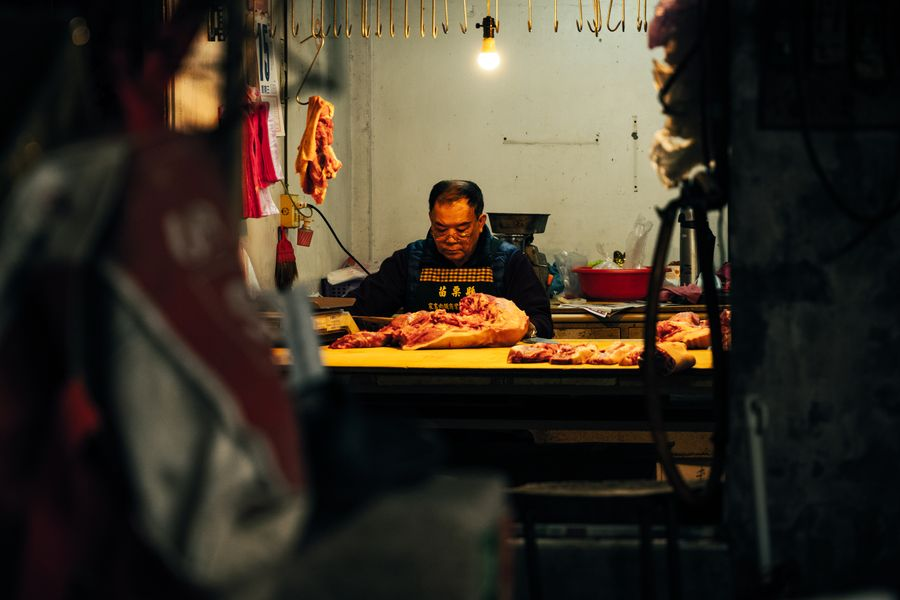

Was 2019 als Traum begann, ist heute ein ausgezeichneter Meisterbetrieb: Michael Wendt und sein Team aus Musterstadt.

Michael Wendt ist nicht einfach Fleischer. Er ist Handwerker aus Leidenschaft, Lehrmeister aus Überzeugung und Goldprämiert aus purem Können. 2019 eröffnete er seinen Laden in der Marktstraße 2A, und seitdem steht er nahezu täglich selbst hinter dem Tresen.
Was ihn antreibt: das Handwerk so zu betreiben, wie es einmal war: mit Rohgewürzen statt Fertigmischungen, regionalen Tieren die er persönlich auf der Weide auswählt, und Rezepten die Jahrzehnte alt sind, aber niemals altbacken schmecken.
Sein "Glutwurst", mit Jalapeños und Cheddar verfeinert, ist heute die meistverkaufte Sorte im Laden. Kunden fahren dafür aus dem ganzen Umland an: bis zu 5.000 Stück am Wochenende, mit Lieferungen bis nach Rom.
Anerkennung der Fachwelt für das, was wir täglich machen.
Wer einmal beim Eichenhof gekauft hat, kommt wieder. So einfach ist das.
Marktstraße 14, 09000 Musterstadt. Oder einfach per Shop bestellen und abholen.